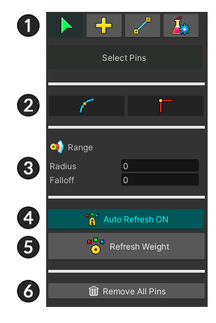
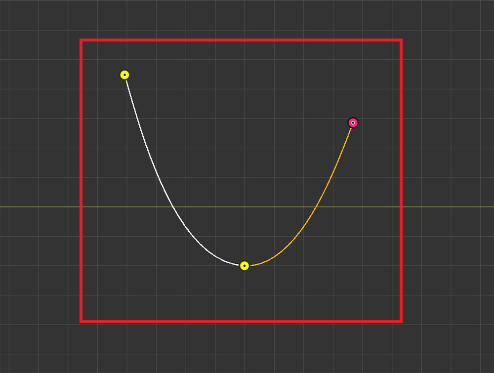
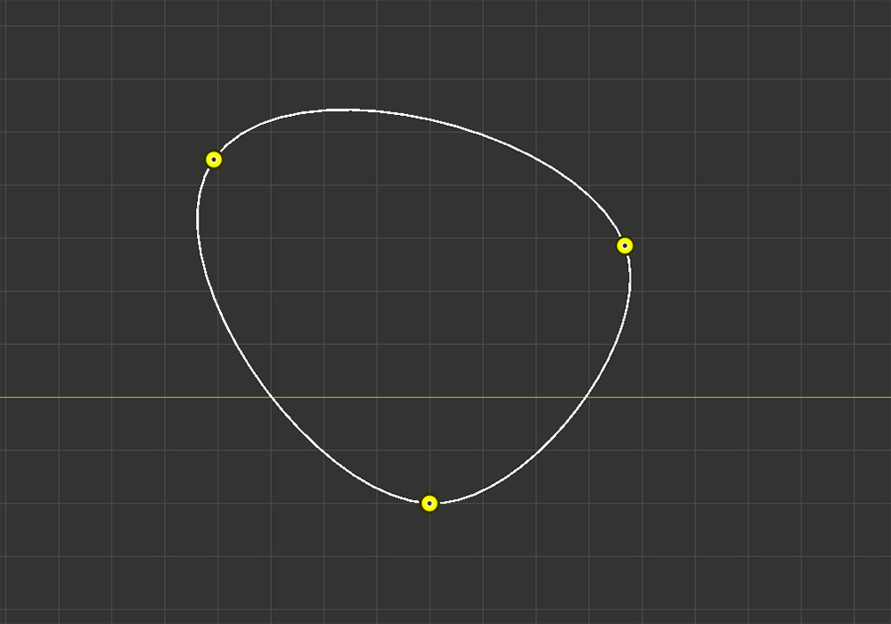
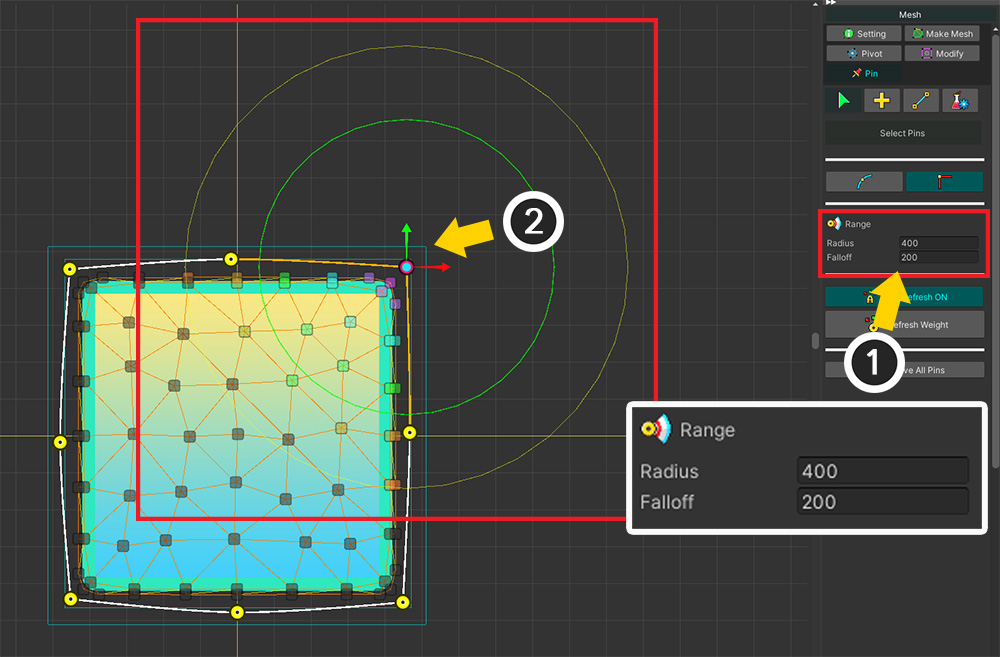
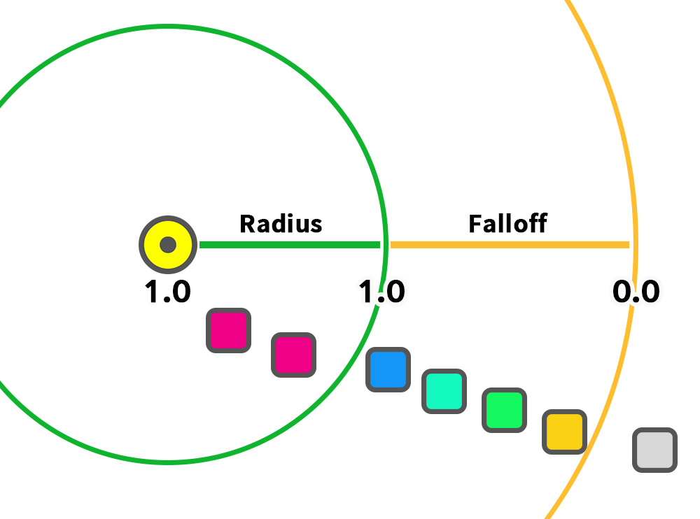
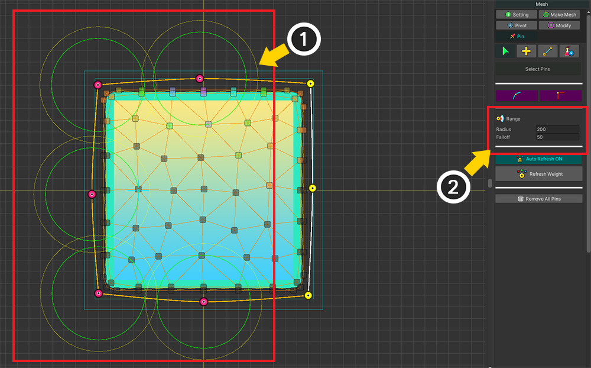
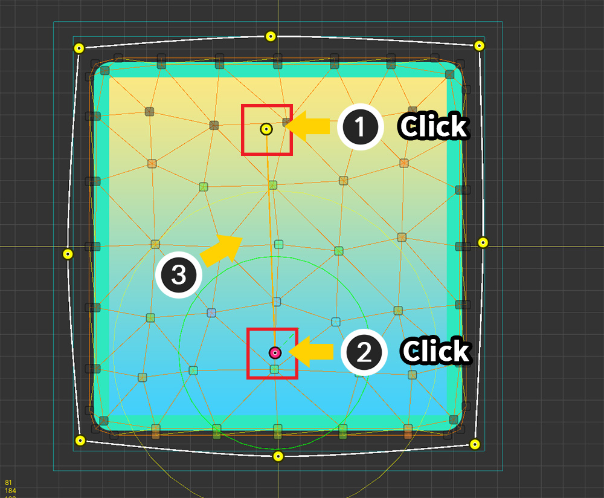
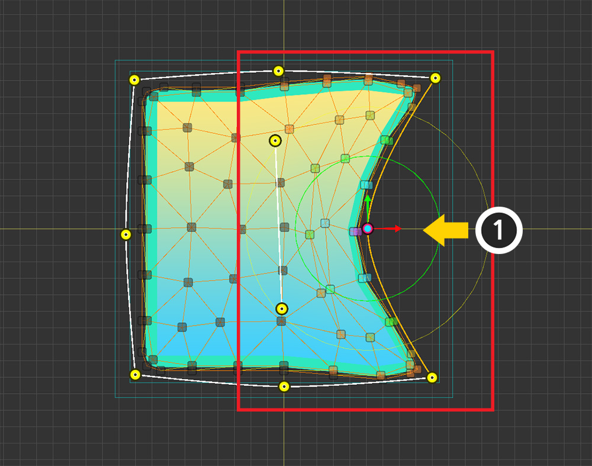
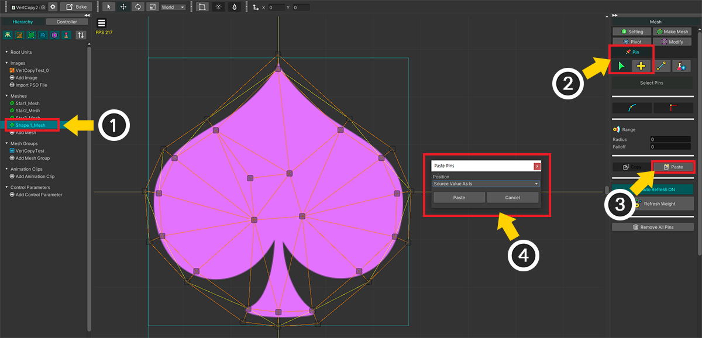
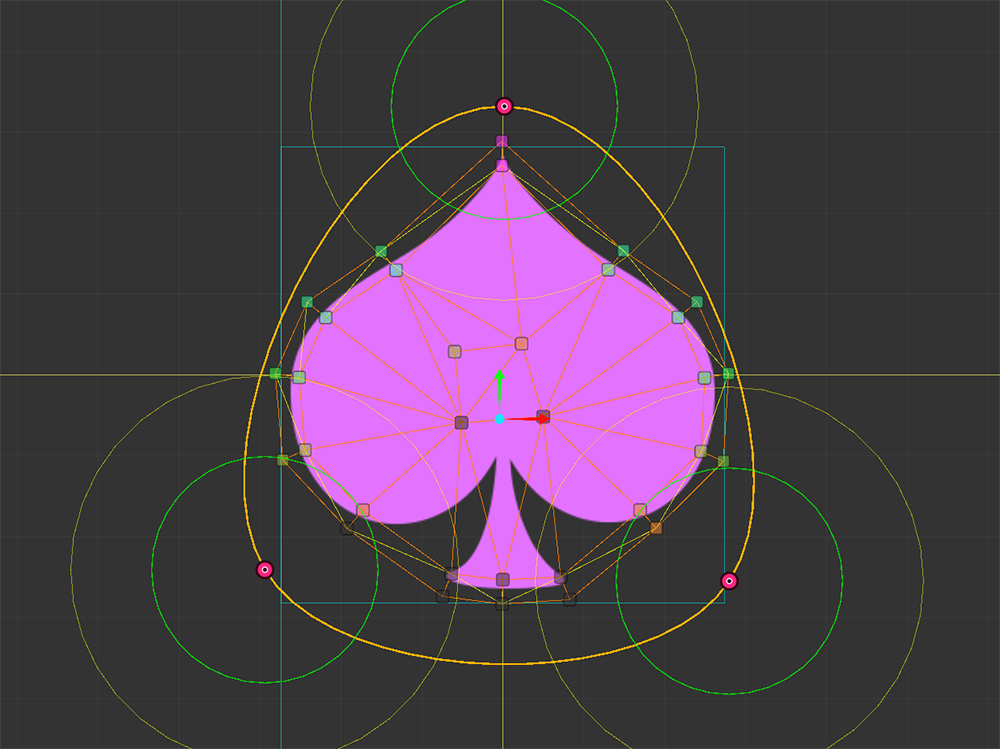

AnyPortrait > Manual > Adding Pins
Adding Pins
1.4.2
If you use Morph Modifier, you can change the position of the vertices to change the character's appearance.
This feature is powerful, but it can become quite cumbersome if you are editing a mesh with a lot of vertices.
An auxiliary tool "Pin" that can be effectively used in these situations has been added in AnyPortrait v1.4.0.
The pin features are as follows.
- You can control multiple vertices with a few pins.
- The pins are connected in a curved way.
- Pins and vertices are automatically connected.
This page covers how to add pins to your mesh.
For how to use pins in Morph modifier, please check the Related Page.

(1) Select Mesh.
(2) You can see that the mesh has quite a few vertices. In this case, it will be convenient to use a pin.
(3) Select the Pin menu.

If you select the Pin menu, the above UI appears.
1. Pin tools : Tools for "Select, Add, Link, and Test".
2. Corner option : Set the type of corner of the selected pin.
3. Weight range : This is the range property for connecting to vertices.
4. Auto Refresh : Whether to automatically recalculate weights when there are changes to vertices or pins.
5. Refresh Weight : Recalculates the weight between pins and vertices.
6. Remove All Pins : Remove all pins in the current mesh.


Let's add a pin.
For the sake of illustration, let's add pins to an empty space independent of the image.
(1) Select the Add tool.
(2) Create a pin by Click in the workspace.
(3) With the first pin selected, Click again to add a pin.

(1) You can see that the two pins are connected in a straight line.
(2) With the pin selected, Click again to add a pin.

The three pins are connected by a curve.
The biggest feature of the Pin tool is that it is connected with a curve and is suitable for a round shape.

(1) Select the last pin created again by Click .
(2) Let's select the first pin. Ctrl+Click makes selection easier.

Three pins are connected by a circular curve.

Pins are different from vertices because they are connected in a curved way.
Up to two other pins can be connected to a pin, and the other pins cannot be connected.
(1) Select a pin that is already connected to two pins, and (2) add a new pin.

(3) You can see that the new pin has been created, but these pins are not connected.

If you Alt+Click the pin, the shape of the corner changes as shown above.

You can change the position of a pin by (1) selecting the pin and (2) Drag .
You can also deselect a pin or remove a pin or curve by pressing Right Click .

As described above, let's add pins and connect them appropriately to the image of the mesh.

Let's select a pin and change its properties.
(1) Select the Select tool.
(2) Select Pin. In this mode, you can use the gizmo to select and transform.
(3) You can see that the weights of the vertices connected to this pin are displayed in color.

Let's modify the weight area of the pin.
How finely you set the weights determines how convenient the subsequent Morph work is.
(1) Change the Radius or Falloff properties of the Range option.
(2) You can see the size of the circular weight area change in the workspace. At the same time, you can visually see that the weights of the vertices change.

A pin's weight range has two properties.
Within the area of Radius, the weight value is 1. Set the vertices directly affected to fit within this range.
Falloff is an area where the weight is gradually reduced. Prevents weights from dropping rapidly.

However, the weighted area is actually more like the above than a circular one.
Weight interpolation with other connected pins on the curve, so it is weighted a little wider.
You can also see that the weight gradually decreases with distance, even within the Radius range by interpolation.

It is also possible to select multiple pins and set their weights at the same time.

You can also use a tool to connect the generated pins.
(1) Select the Link tool.
(2) Two pins to which this tool will be applied are prepared.

Selecting pins in sequence creates curves and connects them.

Finally, a description of the tools to ensure that the pins are added and set up properly.
(1) Select the Test tool.
(2) Select a pin and a gizmo will appear.

(1) If you move the pin, you can see that the connected vertices move together.
In the test tool, changing the position of a pin is not saved as an actual value.
Also, the vertices move according to their weight.
It is effective to use this point to modify the properties of the pin, especially the weight area.
(Other properties of the pin are saved.)

The above modifications can be done in the test tool.
(1) Select a pin and try to move it.
(2) Adjust the range of the weight area by checking how the vertices move.
(3) You can see the vertices move differently because the weights are changed.

(1) Press the Reset Test Position button, (2) all the test positions of the pins are initialized.
Go to the "Using Pins in Morph modifier" page for the sequel!
Copy Pins to another mesh

(1) Select the Pin menu.
(2) Select the Select tool.
(3) Select the pins you want to copy.
(4) Press the Copy button.

(1) Select another mesh to paste the pin into.
(2) Select the Pin menu > Select tool.
(3) Press the Paste button.
(4) A dialog asking how to paste appears.

(1) Since the Pivot of this mesh is properly set, change the option to Relative To Pivot and press the Paste button.
(You can see a detailed explanation of the paste option in the Related page.)

The pins are properly copied to the target mesh.